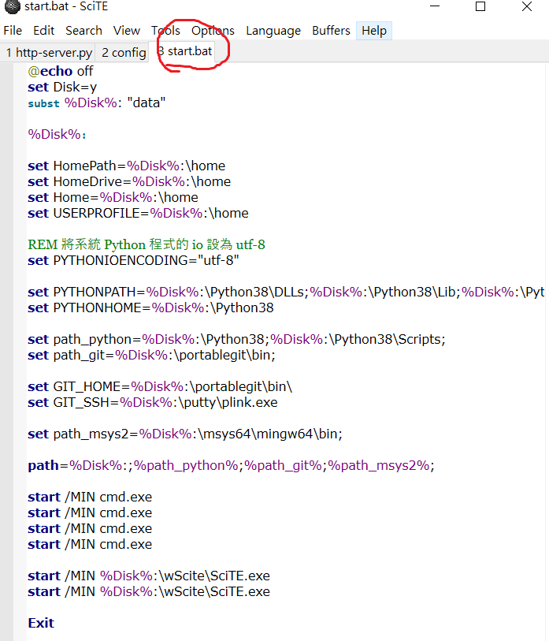
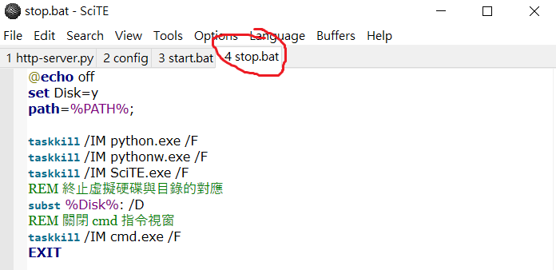

每週內容 <<
Previous Next >> W6
W1~W5
隨身系統之建立
(1)下載安裝Python3.8.2至電腦，從電腦C槽中複製Python38資料夾至隨身系統之data目錄下，解除電腦系統中之Python。
(2)下載Scite.exe編輯器並將資料夾移至隨身系統下之data目錄下，將SciTEGlobal.properties檔案中的code.page = 0修改為code.page = 65001，如此一來就可以更方便的打開內涵中文字的程式了，最後利用SciTE建立stop.bat與start.bat如下:


(3)利用get-pip.py在先前完成之隨身系統中安裝pip，利用pip指令python -m pip install flask lxml bs4 flask-cors Markdown pelican leo 安裝 flask lxml beautifulsoup4 flask-cors Markdown pelican 及 leo
(4)下載msys2先安裝在Windows系統，從電腦C槽中複製msys64資料夾至隨身系統之data目錄下，並解除電腦系統中之msys2。
(5)設置y：\ msys64 \ etc \ pacman.conf與wgetrc等兩個檔案：
pacman.conf檔案部分：
wgetrc檔案部分：
# set for wcm2020
https_proxy = http://[2001:288:6004:17::53]:3128/
http_proxy = http://[2001:288:6004:17::53]:3128/
修改完成後，重新啟動mingw64.exe，使用指令透過IPv6的proxy server進行程序包更新：
$ pacman -Syu
再安裝base-devel與gcc
$ pacman -S base-devel
$ pacman -S gcc
安裝完後須修改start.bat之內容如下:
REM 設定 msys2 64 位元的執行路徑
set path_msys2=%Disk%:\msys64\usr\bin;
path=%Disk%:;%path_python%;%path_git%;%path_msys2%;
安裝make:
$ pacman -S make
處理完MSYS環境中的gcc之後，為了建立Windows 64位元環境下的gcc編譯環境，接下來要在先前尚未處理的MSYS環境下的版本中，安裝mingw-w64-x86_64-gcc與mingw-w64- x86_64-toolchain，下載初步尚未安裝任何gcc版本的可移植MSYS2系統，然後安裝gcc與toolchain：
$ pacman -S mingw-w64-x86_64-gcc
$ pacman -S mingw-w64-x86_64-toolchain
之後就可以修改start.bat啟動路徑為：
REM 設定 msys2 64 位元的執行路徑
set path_msys2=%Disk%:\msys64\mingw64\bin;
path=%Disk%:;%path_python%;%path_git%;%path_msys2%;
後利用此一mingw-w64-x86_64-gcc編譯放置tmp的Scintilla與Scite，只要分別進入win32目錄，然後執行make指令：
$ mingw32-make
完成後，測試編譯以下簡單的C程序：
#include <stdio.h>
int main() {
printf("Hello, world!\n");
return 0;
}
將此檔案存在tmp \ c_ex目錄下，命名為hello.c
然後利用：
gcc -o hello.exe hello.c
完成後將輸出一個hello.exe
(6)安裝PortableGit於隨身系統。
每週內容 <<
Previous Next >> W6